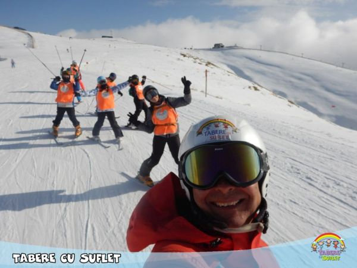
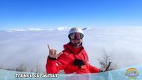
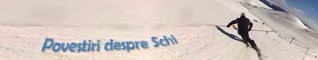

/ Despre Noi / Echipa Tabere cu Suflet
/ Despre Noi / Echipa Tabere cu Suflet


Experienta sa de lucru cu copiii incepe in anii '90, cand obtine atestatului de Instructor de Schi ISIA si absolva cursurile Federatiei Austriece de Alpinism pentru Programe de Copii si Tineret. Participa la Campionatele Nationale de Schi.A comentat sporturi de iarna la ProTV si Eurosport, fiind unul dintre cei mai apreciati comentatori sportivi. Din 2003 s-a specializat pe programe de dezvoltare, teambuilding si organizare de evenimente, iar din 2008 organizeaza tabere pentru copii.
contact: radu@taberecusuflet.ro
Tabere cu Suflet a luat nastere odata cu fetita mea, Sara.
Imi doream sa o pot invata sa schieze, insa, ca parinte, nu este asa usor sa iti inveti propriul copil! Asa s-a nascut ideea de Tabere:)
Apoi s-a nascut baietelul meu, Ted, iar initialele lor au completat numele Tabere cu Suflet:)
Proiectul a fost initiat in 2007, iar Asociatia Nonprofit a aparut in 2011.
De atunci, weekend de weekend iesim cu copiii, iarna la schi iar vara la catarat, cu bicicleta sau in drumetii.
Sportul mi-a adus multe satisfactii, iar Taberele reprezinta o modalitate de a inapoia ce am primit.
Nu am obosit, căci ne plac copiii si iubim ceea ce facem:)
Apoi au aparut programele WeCare, prin care vrem sa oferim o Lume mai Buna, iar centrul de greutate s-a mutat spre a ajuta mai mult! Siteul s-a schimbat si el, incercand sa tina pasul.
Ne place sa calatorim, căci acesta este unul din lucrurile cu care ramanem.
In calatoriile noastre incercam sa ajutam cum putem.
Despre Compasiune: "Dragostea e ca un Zambet! Nu are valoare daca nu o daruiesti."

"Multi ne considera norocosi pentru ca facem ceea ce ne place. Eu cred ca fiecare este dator sa isi afle rostul in viata. Iar cine l-a gasit, se simte de la o posta dupa pacea ce-l inconjoara!"
Despre Spontaneitate: "Sa iti tii gandul nerostit, uneori este aur."
Despre Scoala:"Profesorii buni au darul sa aprinda in elev o scanteie magica!"
Despre Competitii: "Orice competitie poate fi castigata daca te antrenezi, te pregatesti mental si esti atent la detalii."
"Competitiile sportive de amatori au trei Piloni ai motivarii: Competitivitatea, dorinta de Perfectionare si partea Ludica. De prea mule ori o uitam sa ne Jucam si sa ne Bucuram!"
Mai multe despre Radu:
radusavin.ro Amintiri Galerie
